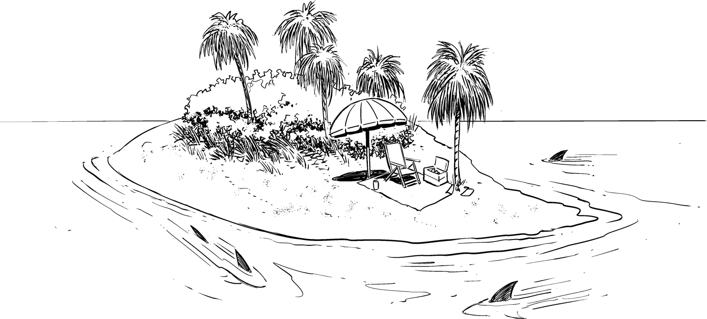

The Island of Sanity in the Sea of Desperation

Demonstrating positive results from a different way of doing things in a small team can help overcome complacency and the fear of uncertainty, and thus is a good way to start a transformation. We shouldn’t forget, though, that the “trailblazers” on such teams have a doubly tough job: they need to overcome the pain of change and do so in an environment that’s still at stage 1 of the transformation journey. This is comparable to eating healthy when everyone around you at the table is having tasty cake and the restaurant has nothing healthy on the menu at all.
To succeed, you need a firm belief and perseverance. The corporate IT equivalent of trying to eat healthy at the cake party is trying to be Agile when it takes four weeks to get a new server or when contemporary development tools and hardware aren’t allowed because they violate corporate security standards. You’ve got to be willing to swim upstream to effect change.
One particular danger of leading change with a different approach is that the existing, slow approaches are often more suitable for the current environment. This is a form of systems resisting change (Chapter 10) and can result in your fancy new software/hardware/development approach being pummeled by the old, existing ways. I compare this to building a full-fledged race car, just to find out that in your corporate environment each car has to pull three tons of baggage in the form of rules and regulations. And instead of a nice, paved racetrack, you find yourself in a foot-deep sea of process mud. You will find out that the old corporate tractor slowly but steadily passes your shiny new Formula 1 car, which is busily throwing up mud while shredding its rear tires. In such a scenario, it becomes difficult to argue that you devised a better way of doing things.
It’s therefore critical to change processes and culture along with introducing new technology. A race car in a tractor pulling contest will be laughable at best. You need to build a proper road before it makes sense to commission a race car. You also need to employ your communication skills (Part III) to secure management support when setbacks happen.
To motivate people for change, you can either dangle the digital carrot, painting pictures of a happy, digital life on the far horizon, or wield the digital stick, warning of impending doom through disruption. In the end, you’ll likely need a little bit of both, but the carrot is generally the more noble approach. For the carrot to work, you need to paint a tangible picture of the alternate future and set visible, measurable targets based on the company strategy. For example, if the corporate strategy is based on increasing speed to reduce time-to-market, a tangible and visible goal would be to cut the release cycle for your division’s software products or services in half (or more) every year. If the goal is resilience, you set a goal of halving average recovery times (Chapter 12) for outages. Some goals can even be enforced through automation.
Digital companies may enforce a goal to improve resilience by deploying a chaos monkey (Chapter 32) that randomly disables components.
Setting goals can be a tricky affair, as the organization might meet the goals without completing the intended change. For example, setting a reduction in number of outages as a goal surfaces two major issues. First, it incentivizes hiding outages and, second, it’ll make teams invest in more up-front testing, slowing down the organization. Lastly, it’s not necessarily the number of outages that negatively affect the business, but the total observed downtime.
You cannot expect everyone to instantly join you on your journey, though, simply because you’re telling stories about the magic land awaiting them in the far distance. You will surely find some explorers or adventurers-at-heart who are willing to get on the boat just based on your vision or charisma. Some may not even believe your promises, but find sailing to unknown shores more appealing than just sitting around. These folks are your early adopters and can become powerful multipliers for your mission. Find them, connect them in a community, and take them along.
Others will wait to see whether your ship actually floats. Be kind to them and pick them up for the journey once they are ready. These folks may actually be more committed as they overcame an initial hurdle or fear. Yet others will want to see you return with your ship loaded with gold. That’s also fine—some have to see to believe. So you need to be patient and recruit for your transformation journey in waves.
Even after folks have joined you on the transformation journey, the chance of a relapse is high: on your journey you will encounter storms, pirates, sharks, sandbanks, icebergs, and other adverse conditions. Captains of a digital transformation have to be skilled sailors, but also strong leaders. A tough approach is to “burn the ships,” derived from the story that upon arriving on a new shore the captain would burn the ships so no one could propose to retreat and go back home. I am not sure whether this approach really increases the odds of success. You want a team that’s committed and believes in success, as opposed to one that has doubts but no ship on which to return.
Some companies’ change programs sail far off the mainland to overcome the constraints imposed by the old world. Copying what they observe in successful so-called “digital” companies, teams move into colorful buildings with open seating plans and baristas, use Apple laptops full of open source stickers, and wear shorts or hoodies. Such units, resembling offshore drilling platforms far from the mainland—run under fancy labels like “innovation center,” “digital hub,” or “digital factory”—can be a lot of fun, but suffer from several major issues:
These new islands often don’t have a meaningful bridge back to the mainland, meaning they largely operate in isolation. They therefore don’t act as a transformation vehicle for the main island. My cynical advice for such a setup is: “if you want to show that smart people in an ideal environment can create valuable things, you could have just bought Facebook stock.”
Such islands often don’t have economic pressure because they are well-funded by the mothership. They thus end up being “digital trust fund” playgrounds that don’t deliver concrete business value. Those setups could be handy for press releases and corporate tours, but not for working in rapid-value delivery cycles.
And last, copying digital leaders’ working environments isn’t going to make you “digital.” This fallacy, known as the cargo cult,1 ignores the mechanisms behind the visual facade. A barista stand doesn’t magically accelerate your release cycles: you can’t copy-paste culture.
You can’t copy-paste culture.
So, just building a new island in a different ocean isn’t going to help with an organization’s transformation. You need to strike a balance between sufficiently reducing constraints but still being relevant to the mainland. How to find the right balance? The best approach I found is to keep iterating (Chapter 36).
Still, the temptation to create a better working environment for at least a subset of the organization can be strong. I followed this approach, which I refer to as building an “island of sanity in the sea of desperation,” myself in the year 2000. Back then, just before the internet bubble burst, our somewhat traditional consulting company vied for talent with internet startups like WebVan and Pets.com (a plastic bag and a sock puppet decorate my private internet bubble archive). I therefore helped create an environment that would be attractive for such candidates and was successful in recruiting a stellar team of top-notch technologists.
Sooner or later, though, your island will become too small for the people on it, causing them to feel constrained in their career options. If the island has drifted far from the mainland because the mainland hasn’t changed much at all, reintegration will be very difficult, increasing the risk that people leave the company altogether. That’s what happened to most of my team in 2001. Second, people will wonder why they have to live on a small and remote island when other companies feature the same, desirable (corporate) lifestyle on their extensive mainland. Wouldn’t that seem much easier? Or, as a friend once asked, or, rather, challenged me in a very pointed way: “Why don’t you just quit and let them die?” While transformation is hard work, you also gotta know when you’re trying too hard.
People working in a separate location can however create significant innovations and transform the mothership, though. The best-known example perhaps is the IBM PC, which was developed far away from IBM’s New York headquarters in Boca Raton, Florida. The development bypassed many corporate rules, for example, by mostly using parts from outside manufacturers, by building an open system, or by selling through retail stores. It’s hard to imagine where IBM (and the rest of the computer industry) would be if they hadn’t created the PC.
IBM was certainly not a company used to moving quickly, with insiders claiming that it “would take at least nine months to ship an empty box.” But the prototype for the IBM PC was assembled in one month and the computer was launched only one year later, which required not only development, but also manufacturing to be set up. Several factors likely contributed to the team’s success:
This skunkworks was tasked with launching a real, sustainable product on the market. It wasn’t a playground.
The team streamlined many processes but didn’t circumvent all corporate guidance. For example, its products passed the standard IBM quality assurance tests and thus gained acceptance on the mainland. The team didn’t deliver a toy but a successful commercial product.
Lastly, teams back on the mainland probably didn’t see this project as a threat. They were simply convinced that it was impossible for IBM to make a computer for less than $15,000 and were happy to be proven wrong.
These factors led to the IBM PC becoming a positive example of an ambitious project team questioning existing assumptions while being led by existing management. A more recent example that large-scale transformation can work is Microsoft under CEO Satya Nadella, who opted not to sail off the mainland but rather led the transformation by “rediscovering the soul of Microsoft.”2
You also need to be cautious that most systems (Chapter 10) operate on a local optimum. While that local optimum might be extremely far removed from the much more agile and fast way digital organizations work, it’s usually still better than the “surrounding” operating modes that you end up with when you make a small change to the system.
For example, an organization may only be able to push code into production every six months, which is a practical joke in the digital world. However, it has managed to establish processes that make this cadence workable. If you change the release cycle to three months, you will make people’s lives worse and may hurt the product quality and even the company’s reputation. Hence, you should first introduce automated build and deployment tools to form the basis for faster releases. Sadly, doing so also makes the operations staff’s lives worse because they are already very busy with production support, and now in addition they must attend training and learn new tools. They will also make mistakes while doing so.
In your view, the organization might live on a tiny molehill while you know of a high mountain of gold somewhere else. However, between the molehill and the mountain is a muddy swamp. Because you won’t be able to leap straight to the mountain of gold, you first have to get folks off the molehill, convincing them to keep moving after their feet get wet and muddy. That’s why you must communicate a clear vision and prepare them for tougher times ahead before the new optimum can be reached.
One shouldn’t underestimate the resistance to change and innovation in large and successful enterprises that have “done things this way” for a long time. H. G. Wells’s short story “The Country of the Blind” comes to mind: an explorer falls down a steep slope and discovers a village in a valley that is completely separated from the rest of the world. Unbeknownst to the explorer, a genetic disease has rendered all of the villagers unable to see. Upon realizing this peculiarity, the explorer feels that because “the one-eyed man is king” in this town he can teach and rule them. However, his ability to see proves to be of little advantage in a place designed for blind people, without windows or lights. After struggling to take advantage of his gift, the explorer is to have his eyes removed by the village doctor to cure his strange obsessions.
Oddly, two versions of this story exist, each with a different ending: in the original version, the explorer escapes the village after struggling back up the slope. The revised story has him observe that a rockslide is about to destroy the village and he’s the only one able to escape, along with his blind girlfriend. In either case, it’s not a happy ending for the villagers. Be careful not to fall into the “in the land of the blind, the one-eyed man is king” trap. Complex organizational systems settle into specific patterns over time and actively resist change. If you want to change their behavior, you have to change the system.
1 Wikipedia, “Cargo Cult,” https://oreil.ly/GpesJ.
2 Satya Nadella, Hit Refresh: The Quest to Rediscover Microsoft’s Soul and Imagine a Better Future for Everyone (New York: HarperBusiness, 2017).